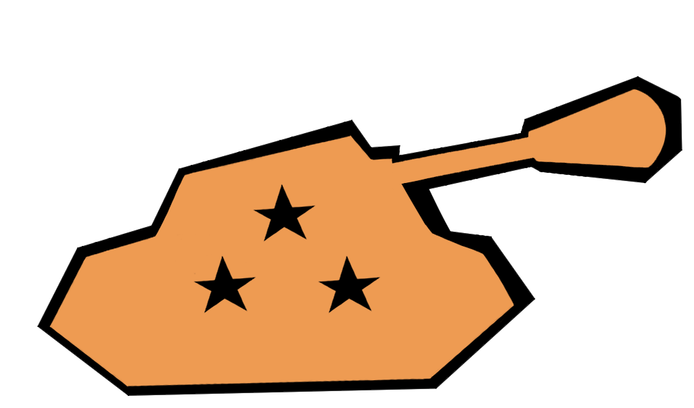

In Tank Toss, the player assumes control of a soldier whom’s only mode of locomotion is using the explosions of their tank shells to launch themselves through difficult terrain. Along the way, the player must make the most of limited ammunition and objects with different physical properties to reach the goal at the end of every 2D level. The game will be made using the Unity engine, modeling will be done using Blender, and Phototshop will be used to create textures. Audacity will be used to add sound to the casual atmosphere of Tank Toss.